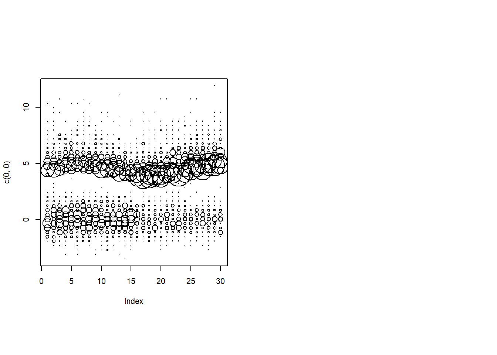
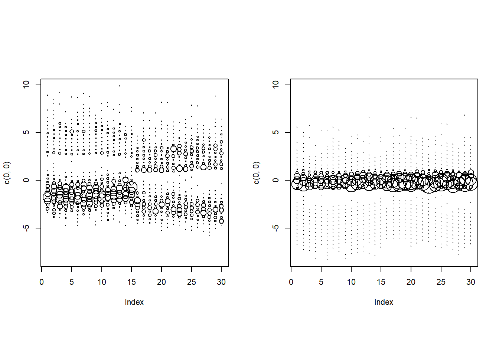
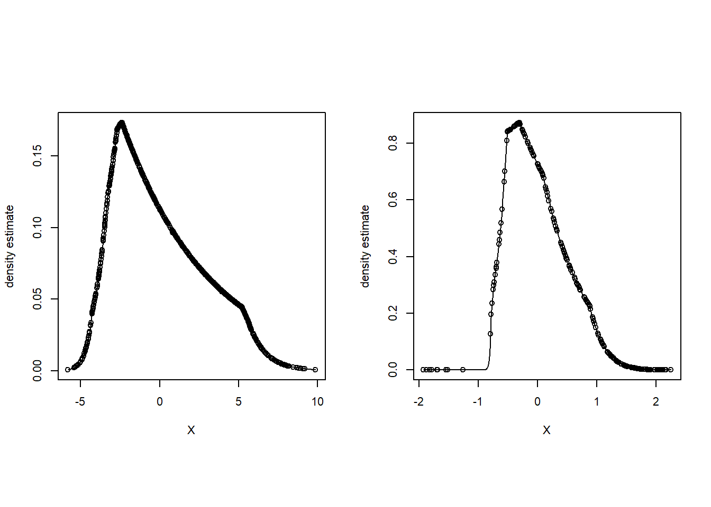
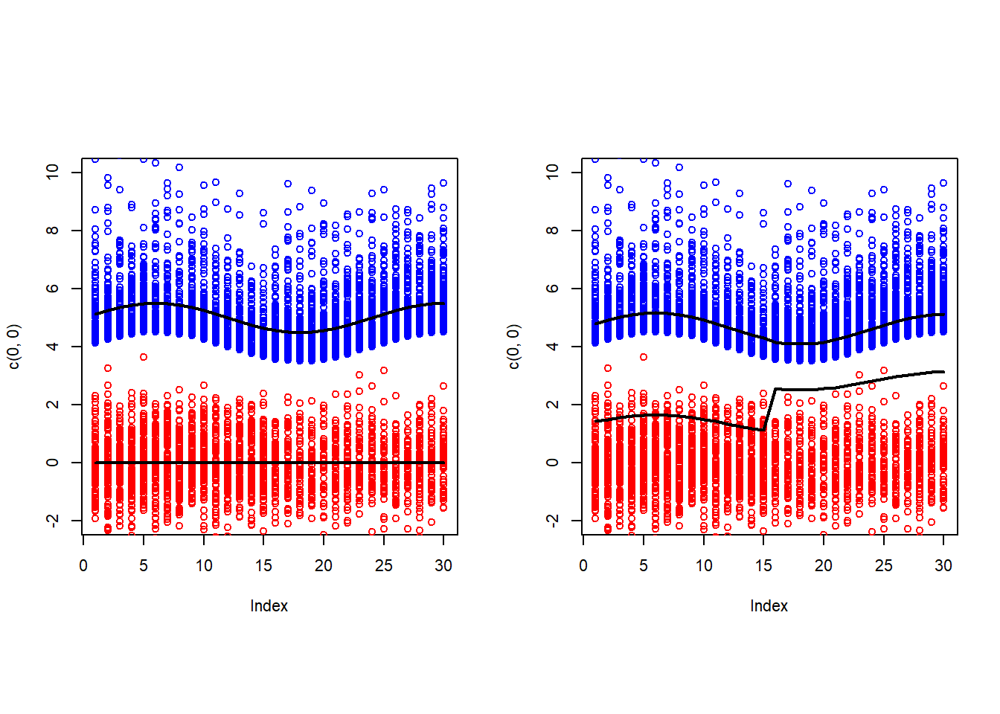
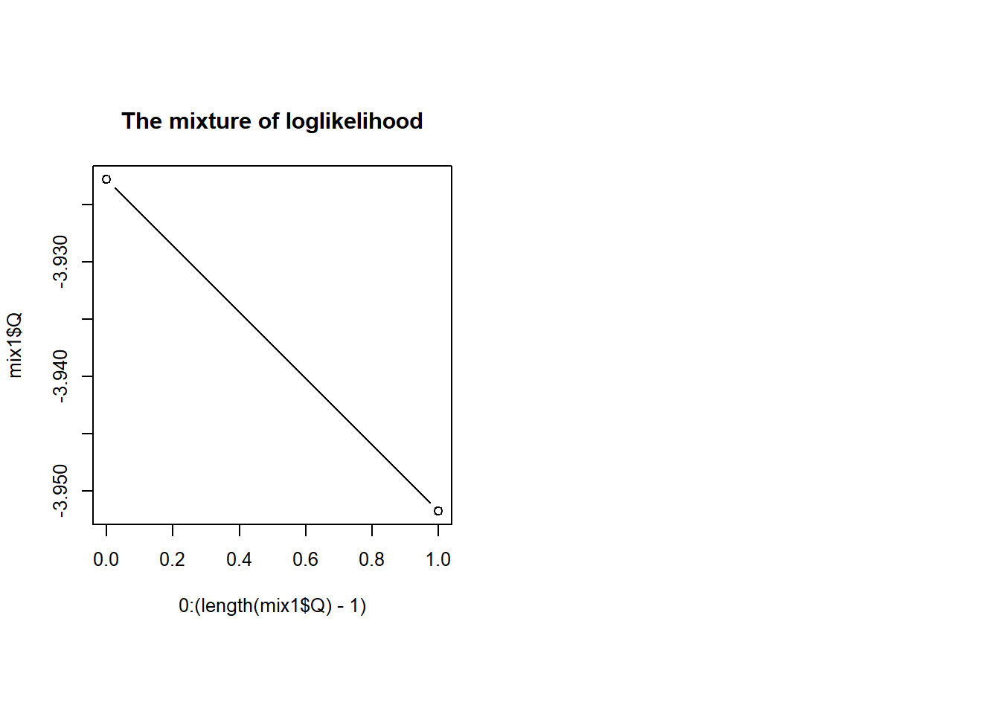
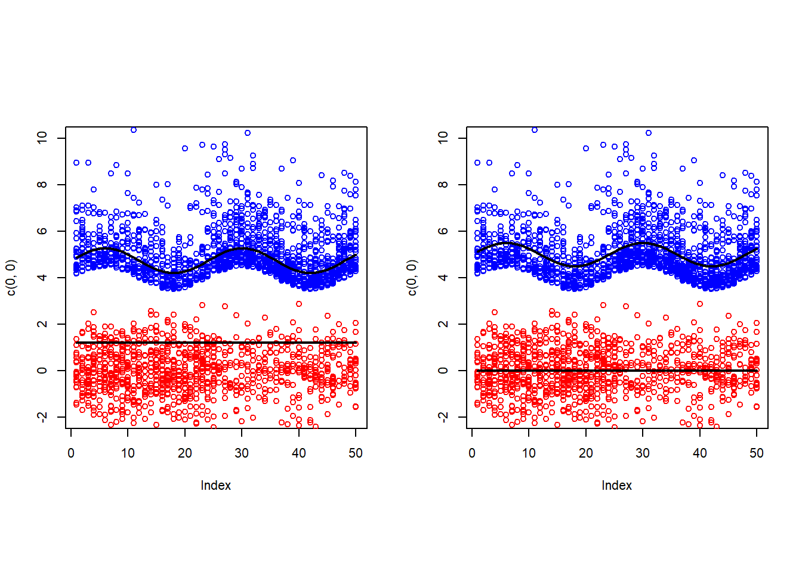
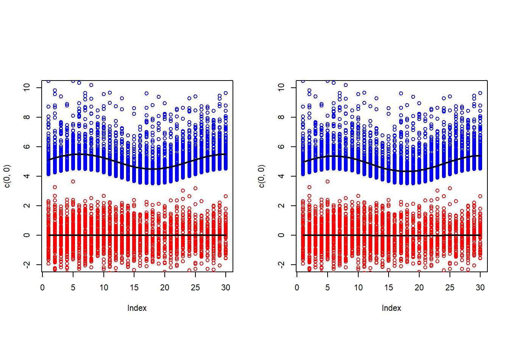
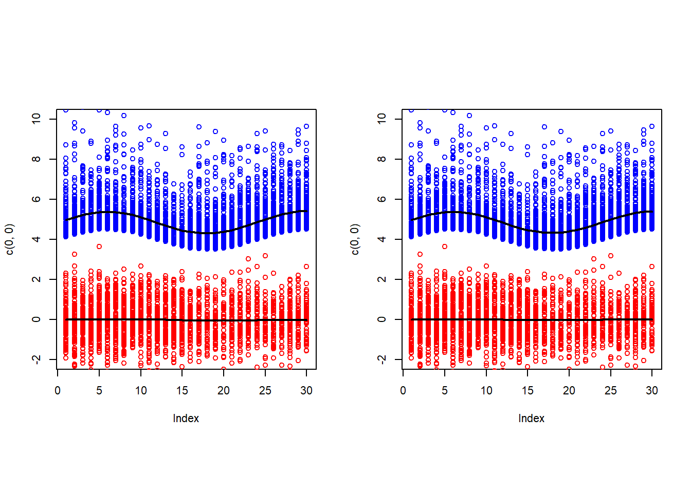

3 The method
We are using Expectation-Maximization(EM) algorithm to maximize the surrogate log-likelihood \(Q(\alpha, g, \theta) = \frac{1}{N} \sum_{t=1}^T \sum_{i=1}^{n_t} \sum_{k=1}^K r_{tik} \left[ g_k \left(Y_i^{(t)} -\theta_{k0} -\theta_k^T X^{(t)} \right)) + \log \pi_{tk}(\alpha) \right]\).
Here’s a high-level look at the algorithm.
#' Mixture of log-concave regression
#'
<<X-param>>
<<Y-param>>
<<K-param>>
<<B-param>>
#' @param min_count_ratio min count ratio
<<r_bar-param>>
<<lambda_alpha-param>>
<<lambda_theta-param>>
#' @param max_iter number of maximum iterations of EM to perform
#' @param iter_eta threshold for the iteration. If the increment of loglikelihood is smaller than iter_eta,
#' we terminate the iterations.
#'
# mixLcdReg <- function(X,
# Y,
# K,
# B = 40,
# min_count_ratio = 0,
# r_bar,
# lambda_alpha,
# lambda_theta,
# max_iter = 100,
# iter_eta = 1e-6) {
# preprocessing
# initialization with flexmix
# iteration
# for (i in seq(max_iter)) {
## E-step
## M-step
### M-step alpha
### M-step theta
### M-step shift
### M-step g
## termination criteria
# }
# return
#}Here is more detailed explanation of the algorithm:
3.1 preprocessing
Before initializing the parameters, we need to apply binning to \(Y\). Since it is better to deal with a matrix than a list, we are resizing Y. Resized Y has \(N_{bin} \times d\) dimension, where \(N_{B_t}\) is the number of non-empty bins in time \(t\) and \(N_{bin} = \sum_{t = 1}^T N_{B_t}\). Since \(N_{B_t} \le B\), \(N_{bin} \le TB\). Also, to make \(X\) have same row-dimension of \(Y\), we need to repeat \(X^{(t)}\), which is \(t^{th}\) row of \(X\), \(N_{B_t}\) times. Note that T means True in R, we use TT instead of T for time so that \(t = 1,..., TT\)
#' Binning on Y
#'
<<X-param>>
<<Y-param>>
<<B-param>>
#' @param min_count_ratio min count ratio
#' @return Y_bin N_bin-by-d matrix, indicating the center of the bins
#' @return Y_count N_bin-vector indicating how many points belong to each bin
#' @return X_bin N_bin-by-p matrix, which is expanded version of X so that its dimension agrees with Y_bin's
#' @return time_indicator length N_bin factor indicating the time of the data points
#' @return N the total number of observations of Y_i^(t) in Y
#' @export
binningY_d1 = function(X,
Y,
B = 40,
min_count_ratio = 0){ # now, it only works for d = 1
TT = length(Y)
p = dim(X)[2]
Y_range = unlist(lapply(Y, range))
minY = min(Y_range)
maxY = max(Y_range)
bin = seq(from=minY, to=maxY, length= B + 1)
binnedY = lapply(Y, findInterval, bin, rightmost.closed = T)
binnedY = lapply(binnedY, factor, levels = 1:B)
count = lapply(binnedY, table)
N = do.call(sum, lapply(count, sum))
mid = rep(0, B)
for (i in 1:B){
mid[i] = (bin[i+1] + bin[i])/2
}
# resizing
Y_bin = c()
Y_count = c()
X_bin = c()
time_indicator = c()
for (t in 1:TT){
tbl = count[[t]]
count_nonzero = 0
for (j in 1:B){
if (tbl[j] > N*min_count_ratio/TT){
Y_bin = c(Y_bin, c(mid[j]))
Y_count = c(Y_count, tbl[j])
count_nonzero = count_nonzero + 1
}
}
time_indicator = c(time_indicator, rep(t, count_nonzero))
new_row = t(matrix(rep(X[t,], count_nonzero), nrow = p))
X_bin = rbind(X_bin, new_row)
}
Y_bin = matrix(Y_bin, ncol = 1)
time_indicator = factor(time_indicator)
return(list(Y_bin = Y_bin,
Y_count = Y_count,
X_bin = X_bin,
time_indicator = time_indicator,
N = N
))
}B = 40
K = 2
r_bar = 1e-3
lambda_theta = 0
lambda_alpha = 1e-8
min_count_ratio = 0
p = dim(X)[2]
<<preprocessing>>###"preprocessing"###
binnedY = binningY_d1(X, Y, B, min_count_ratio)
Y_bin = binnedY$Y_bin
Y_count = binnedY$Y_count
X_bin = binnedY$X_bin
time_indicator = binnedY$time_indicator
N = binnedY$N
p = dim(X_bin)[2]We can see that the length of Y are reduced significantly after binning
## [1] 6000## [1] 728## [1] 728 2Let’s have a look at what the binning does on our example data.
par(mfrow = c(1, 2), pty = 's', cex = 0.7)
plot(c(0, 0), xlim = c(1, TT), ylim = range(Y_bin), col = 'white')
for (t in 1:TT){
index = time_indicator == t
points(rep(t, sum(index)), Y_bin[index], cex = Y_count[index]/mean(Y_count))
}
3.2 Initialization
To initialize \(\theta\) and responsibilities, we fit a Gaussian mixture of regressions model. We use flexmix to do this. Here, each point has weight, which is its resp multiplied by its Y_count. We are thresholding on the weights so that if weights is smaller than r_bar, we consider it to be zero so that we don’t take them account into our algorithm. idx indicates that whether the corresponding weight are above the threshold or not. If idx is FALSE, we don’t consider the corresponding point.
###"initialize-with-flexmix"###
# note that it is for d = 1
# use flexmix to get initial resp, theta:
flex = flexmix::flexmix(Y_bin ~ X_bin, k = K, weights = as.vector(Y_count))
# initial responsibility
resp_init = flexmix::posterior(flex)
# thresholding after resp * Y_count
weight_init = resp_init * Y_count
idx_init = weight_init > r_bar
# theta initialization
theta0_init = list()
theta_init = list()
for (k in 1:K){
theta0_init[[k]] = flexmix::parameters(flex, comp = k)[1]
theta_init[[k]] = matrix(flexmix::parameters(flex, comp = k)[2:(p+1)])
}## ✔ Adding 'flexmix' to Imports field in DESCRIPTION
## • Refer to functions with `flexmix::fun()`## ✔ Adding 'LogConcDEAD' to Imports field in DESCRIPTION
## • Refer to functions with `LogConcDEAD::fun()`## ✔ Adding 'glmnet' to Imports field in DESCRIPTION
## • Refer to functions with `glmnet::fun()`Later in Mstep_g, we want to make sure that the weighted sum of residuals w.r.t. weight. This guarantees the resulting mlecld \(g\) of Mstep_g has a zero mean. Normally, the weighted sum of residuals w.r.t. weight is not zero, so we want to shift the \(\theta_0\) so that \(\theta_0\) is ‘centered’
###"X_bin-param"###
#' @param X_bin N_bin-by-p matrix, which is expanded version of X so that its dimension agrees with Y_bin's ###"weight-param"###
#' @param weight N_bin by K matrix. weight[i, k] represents weight of ith residual for kth group###"idx-param"###
#' @param idx N_bin by K logical matrix. idx[i, k] represents whether the corresponding weight is above r_bar#' Mstep_shift (d = 1)
#'
<<X_bin-param>>
<<Y_bin-param>>
<<theta-param>>
<<weight-param>>
<<idx-param>>
<<K-param>>
#' @return theta0 length K list, with `theta0[[k]]` being the estimate for the intercept coefficient
#' of the regression for kth group
#' @export
Mstep_shift = function(X_bin,
Y_bin,
theta,
weight,
idx,
K){
theta0 = list()
for (k in 1:K){
idx_k = idx[,k]
# except for the intercept term
theta0[[k]] = t(Y_bin[idx_k,] - X_bin[idx_k,] %*% as.matrix(theta[[k]])) %*% weight[idx_k,k] / sum(weight[idx_k,k])
}
return(theta0)
}Using this initial responsibility, we can initialize \(\alpha\).
#' updating alpha
#'
<<X-param>>
<<weight-param>>
<<lambda_alpha-param>>
#' @param time_indicator length N_bin factor indicating the time of the data points
#' @return alpha (p+1)-by-K matrix. The coefficients for the cluster probabilities.
#' @export
Mstep_alpha = function(X,
weight,
lambda_alpha,
time_indicator){
lambda_max = lambda_alpha * 100
lambdas = exp(seq(from = log(lambda_max), to = log(lambda_alpha), length = 30))
weight.sum = apply(weight, 2, tapply, time_indicator, sum)
fit = glmnet::glmnet(x = X,
y = weight.sum,
lambda = lambdas,
family = "multinomial",
intercept = TRUE)
coefs = glmnet::coef.glmnet(fit, s = lambda_alpha)
alpha = as.matrix(do.call(cbind, coefs))
return(alpha) # (p+1) by K matrix
}Now we make a separate function to calculate residuals, since we are going to use it pretty often.
#' calculating residuals for each k
#'
<<X_bin-param>>
<<Y_bin-param>>
<<theta0-param>>
<<theta-param>>
<<K-param>>
#' @return length K list, with `resi0[[k]]` N_bin-by-d residual matrix
#' @export
calc_resi = function(X_bin,
Y_bin,
theta0,
theta,
K){
resi = list()
for (k in 1:K){
resi[[k]] = Y_bin - rep(theta0[[k]], dim(X_bin)[1]) - X_bin %*% matrix(theta[[k]])
}
return(resi) # length K list, with `theta0[[k]]` N_bin-by-d residual matrix
}Finally, based on the residuals, we calculate the mlecld g.
#' updating `mlelcd` g's
#'
<<resi-param>>
<<weight-param>>
<<idx-param>>
<<K-param>>
#' @return g length K list, with `g[[k]]` being `mlelcd` for the kth group
#' @export
Mstep_g = function(resi,
weight,
idx,
K){
g = list()
for (k in 1:K){
idx_k = idx[,k]
suppressWarnings({g[[k]] = LogConcDEAD::mlelcd(resi[[k]][idx_k,], w = weight[idx_k,k])})
}
return(g)
}Thus, the initialization part is as follows:
###"initialization"###
<<initialize-with-flexmix>>
## initial alpha
alpha_init = Mstep_alpha(X, weight_init, lambda_alpha, time_indicator)
## initial theta shift
theta0_init = Mstep_shift(X_bin, Y_bin, theta_init, weight_init, idx_init, K)
resi_init = calc_resi(X_bin, Y_bin, theta0_init, theta_init, K)
## initial g
g_init = Mstep_g(resi_init, weight_init, idx_init, K)#library(flexmix)
<<initialization>>This is how initial residuals for each group look like.
par(mfrow = c(1, 2), pty = 's', cex = 0.7)
plot(c(0, 0), xlim = c(1, TT), ylim = range(unlist(resi_init)), col = 'white')
for (t in 1:TT){
index = time_indicator == t
points(rep(t, sum(index)), resi_init[[1]][index])
}
plot(c(0, 0), xlim = c(1, TT), ylim = range(unlist(resi_init)), col = 'white')
for (t in 1:TT){
index = time_indicator == t
points(rep(t, sum(index)), resi_init[[2]][index])
}
Now, the points are magnified (or shrink) proportional to their weights
par(mfrow = c(1, 2), pty = 's', cex = 0.7)
plot(c(0, 0), xlim = c(1, TT), ylim = range(unlist(resi_init)), col = 'white')
for (t in 1:TT){
index = time_indicator == t
points(rep(t, sum(index)), resi_init[[1]][index], cex = weight_init[index,1]/mean(Y_count))
}
plot(c(0, 0), xlim = c(1, TT), ylim = range(unlist(resi_init)), col = 'white')
for (t in 1:TT){
index = time_indicator == t
points(rep(t, sum(index)), resi_init[[2]][index], cex = weight_init[index,2]/mean(Y_count))
}
Here are the plots of initial g’s

The left plot is the true plot that we saw before. The black curves in the right plot are made using initial estimates for \(\theta_0\) and \(\theta\).
par(mfrow = c(1, 2), pty = 's', cex = 0.7)
plot_data_and_model(X, Y, Z, theta0_true, theta_true)
plot_data_and_model(X, Y, Z, theta0_init, theta_init)
They are initial \(\theta_0\) and \(\theta\)
## [[1]]
## [,1]
## [1,] 1.346058
##
## [[2]]
## [,1]
## [1,] 4.662282## [[1]]
## [,1]
## [1,] 0.3085165
## [2,] 1.4751831
##
## [[2]]
## [,1]
## [1,] 0.51055292
## [2,] -0.05385115We also need some other functions to calculate \(\pi_{tk}(\hat \alpha)\) and surrogate loglikelihood \(Q\)
#' calculating \pi_{tk}(\alpha) = P(Z_i^{(t)} = k| X^(t))
#'
<<X_bin-param>>
<<alpha-param>>
#' @return pi_k N_bin-by-K matrix with `pi_k[i,k]` indicates P(Z_i = k| X^(t))
#' @export
pi_k = function(X_bin, alpha){
p = dim(X_bin)[2]
tmp = exp(alpha[1,] + X_bin %*% alpha[2:(p+1),])
pi_k = tmp / rowSums(tmp) # N_bin by K matrix
return(pi_k)
}#' calculating the surrogate loglikelihood Q
#'
<<X_bin-param>>
<<g-param>>
<<resi-param>>
<<theta-param>>
<<alpha-param>>
<<weight-param>>
<<idx-param>>
<<lambda_alpha-param>>
<<lambda_theta-param>>
<<K-param>>
#' @param N the total number of observations of Y_i^(t) in Y
#' @return Q the surrogate loglikelihood of the current parameters
#' @export
# calculating the surrogate
calc_surr = function(X_bin,
g,
resi,
theta,
alpha,
weight,
idx,
lambda_alpha,
lambda_theta,
K,
N){
P = pi_k(X_bin, alpha) # N_bin by K matrix
p = dim(X_bin)[2]
sum = c()
for (k in 1:K){
tmp = weight[,k] * (LogConcDEAD::dlcd(resi[[k]], g[[k]], uselog = T) + log(P[,k]))
tmp[!idx[,k]] = 0
sum = cbind(sum, tmp) # N_bin by K matrix
}
Q = mean(rowSums(sum)) - lambda_alpha * sum(abs(alpha[2:(p+1),])) / N - lambda_theta * sum(abs(unlist(theta))) / N
return(Q)
}It is the initial (surrogate) loglikelihood Q
Q = calc_surr(X_bin, g_init, resi_init, theta_init, alpha_init, weight_init, idx_init, lambda_alpha, lambda_theta, K, N)
print(Q)## [1] -19.465613.3 E-step
Given an estimate of \((\alpha,\theta,g)\), the E-step computes for each \(Y_{i}^{(t)}\) how “responsible” each cluster is for it. In particular, the responsibility vector \((\hat r_{ti1},\ldots,\hat r_{tiK})\) is a probability vector. It is computed using Bayes rule:
\[ \hat r_{tik} = \hat P(Z_i^{(t)} = k |Y_i^{(t)} , X^{(t)} ; \hat \alpha, \hat \theta, \hat g) = \frac{exp(\hat g_k(Y_i^{(t)} -\hat \theta_{k0} -\hat \theta_k^T X^{(t)} )) \pi_{tk}(\hat \alpha)} {\sum_{l=1}^K exp(\hat g_l(Y_i^{(t)} -\hat \theta_{l0} -\hat \theta_l^T X^{(t)} )) \pi_{tl}(\hat \alpha) } \]
#' Updating responsibility
#'
<<X_bin-param>>
<<Y_count-param>>
<<resi-param>>
<<alpha-param>>
<<g-param>>
<<K-param>>
<<r_bar-param>>
#' @return resp N_bin by K matrix. `resp[i, k]` being the current estimate for P(Z_i = k|X, Y)
#' @return weight N_bin by K matrix. weight[i, k] represents weight of ith residual for kth group
#' @return idx N_bin by K logical matrix. idx[i, k] represents whether the corresponding weight is above r_bar
#' @export
E_step = function(X_bin,
Y_count,
resi,
alpha,
g,
K,
r_bar){
P = pi_k(X_bin, alpha)
sum = c()
for (k in 1:K){
tmp = LogConcDEAD::dlcd(resi[[k]], g[[k]]) * P[,k]
sum = cbind(sum, tmp)
}
resp = sum/rowSums(sum)
if (sum(is.nan(resp)) > 0) {
print("There are some NaN's in the new responsibilties")
}
weight = resp * Y_count
idx = weight > r_bar
return(list(resp = resp,
weight = weight,
idx = idx
))
}###"E-step"###
## E-step: update responsibilities
Estep = E_step(X_bin, Y_count, resi_old, alpha_old, g_old, K, r_bar)
resp_new = Estep$resp
weight_new = Estep$weight
idx_new = Estep$idx idx_old = idx_init
resi_old = resi_init
alpha_old = alpha_init
g_old = g_init
<<E-step>>Let’s have a look at the responsibilities that we get after E-step. Here are some from the 1st time point:
## tmp tmp
## [1,] 1 0
## [2,] 1 0
## [3,] 1 0
## [4,] 1 0
## [5,] 1 0
## [6,] 1 03.4 M-step
In the M-step, we update the estimates of \((\alpha,\theta,g)\):
###"M-step"###
## M-step: update estimates of (alpha,theta,g)
### Mstep_alpha
alpha_new = Mstep_alpha(X, weight_new, lambda_alpha, time_indicator)
Q_every = append(Q_every, calc_surr(X_bin, g_old, resi_old, theta_old, alpha_new, weight_new, idx_new, lambda_alpha, lambda_theta, K, N))
### Mstep_theta
M_theta = Mstep_theta(X_bin, X, Y_bin, g_old, weight_new, idx_old, theta0_old, theta_old, lambda_theta, K, time_indicator)
theta0_new = M_theta$theta0
theta_new = M_theta$theta
### Mstep_shift
theta0_new = Mstep_shift(X_bin, Y_bin, theta_new, weight_new, idx_new, K)
resi_new = calc_resi(X_bin, Y_bin, theta0_new, theta_new, K)
Q_every = append(Q_every, calc_surr(X_bin, g_old, resi_new, theta_new, alpha_new, weight_new, idx_new, lambda_alpha, lambda_theta, K, N))
### Mstep_g
g_new = Mstep_g(resi_new, weight_new, idx_new, K)
Q_every = append(Q_every, calc_surr(X_bin, g_new, resi_new, theta_new, alpha_new, weight_new, idx_new, lambda_alpha, lambda_theta, K, N))
### loglikelihood
Q = append(Q, calc_surr(X_bin, g_new, resi_new, theta_new, alpha_new, weight_new, idx_new, lambda_alpha, lambda_theta, K, N))We have already seen the Mstep_alpha(), Mstep_shift(), and Mstep_g(). We only need to defineMstep_theta()` here.
#' Updating theta
#'
<<X_bin-param>>
<<X-param>>
<<Y_bin-param>>
<<g-param>>
<<weight-param>>
#' @param idx_old N_bin by K logical matrix, but used in the previous iteration.
#' idx[i, k] represents whether the corresponding previous weight is above r_bar
<<theta0-param>>
<<theta-param>>
<<lambda_theta-param>>
<<K-param>>
#' @param time_indicator length N_bin factor indicating the time of the data points
#' @return theta0 length K list, with `theta0[[k]]` being the estimate for the intercept coefficient
#' of the regression for kth group
#' @return theta length K list, with `theta[[k]]` being the p-by-1 vector of estimate for coefficients
#' of the regression for kth group
#' @export
Mstep_theta = function(X_bin,
X,
Y_bin,
g,
weight,
idx_old,
theta0,
theta,
lambda_theta,
K,
time_indicator){
theta0_new = list()
theta_new = list()
for (k in 1:K){
tmp = LP_d1(X_bin, X, Y_bin, g[[k]], weight[,k], idx_old[,k], theta0[[k]], theta[[k]], lambda_theta, time_indicator)
theta0_new[[k]] = tmp$theta0_k
theta_new[[k]] = tmp$theta_k
}
return(list('theta0' = theta0_new , 'theta' = theta_new ))
}We need an internal function which calculate theta using LP for each k
#' Updating theta for each k
#'
<<X_bin-param>>
<<X-param>>
<<Y_bin-param>>
#' @param g_k `mlelcd` for the kth group
#' @param weight_k N_bin vector of weight for kth group
#' @param idx_old_k N_bin logical vector, but used in the previous iteration.
#' idx_old_k[i] represents whether the corresponding previous weight for kth group is above r_bar
#' @param theta0_k an intercept coefficient for the regression for the kth group
#' @param theta_k a p-vector of coefficients for the regression for the kth group
<<lambda_theta-param>>
#' @param time_indicator length N_bin factor indicating the time of the data points
#' @return theta0_k estimate for the intercept coefficient of the regression for kth group
#' @return theta_k p-vector of estimates for coefficients of the regression for kth group
#' @export
LP_d1 = function(X_bin,
X,
Y_bin,
g_k,
weight_k,
idx_old_k,
theta0_k,
theta_k,
lambda_theta,
time_indicator){
weight = weight_k[idx_old_k]
Y_idx = Y_bin[idx_old_k]
X_idx = X_bin[idx_old_k,]
p = dim(X_idx)[2]
n = dim(X_idx)[1] # the number of points in C_n
J = length(g_k$beta) # the number of affine functions
resi = Y_idx - rep(theta0_k, n) - X_idx %*% as.matrix(theta_k)
L = min(resi)
U = max(resi)
const_mat = matrix(0, nrow = J*n + 2*TT, ncol = 2*(n+p+1))
const_vec = rep(0, J*n + 2*TT)
# epigraph part
for (i in 1:n) {
for (j in 1:J) {
const_mat[(i-1)*J + j, i] = 1
const_mat[(i-1)*J + j, n + i] = -1
}
const_mat[((i-1)*J + 1):((i-1)*J + J), (2*n+1)] = g_k$b
const_mat[((i-1)*J + 1):((i-1)*J + J), (2*n+2)] = -g_k$b
const_mat[((i-1)*J + 1):((i-1)*J + J), (2*n+3):(2*n+p+2)] = g_k$b %*% X_idx[i,]
const_mat[((i-1)*J + 1):((i-1)*J + J), (2*n+p+3):(2*(n+p+1))] =
- const_mat[((i-1)*J + 1):((i-1)*J + J), (2*n+3):(2*n+p+2)]
const_vec[((i-1)*J + 1):((i-1)*J + J)] = Y_idx[i] * g_k$b - g_k$beta
}
# feasibility part
const_mat[(J*n+1):(J*n+TT), 2*n+1] = rep(1, TT)
const_mat[(J*n+1):(J*n+TT), 2*n+2] = -rep(1, TT)
const_mat[(J*n+1):(J*n+TT), 2*(n+1)+ (1:p)] = X
const_mat[(J*n+1):(J*n+TT), 2*(n+1)+p+ (1:p)] = -X
const_mat[(J*n+TT+1):(J*n+TT+TT), 2*n+(1:(2*(p+1)))] = -const_mat[(J*n+1):(J*n+TT), 2*n+(1:(2*(p+1)))]
for (t in 1:TT){
const_vec[J*n + t] = min(Y_bin[time_indicator == t & idx_old_k])- L
const_vec[J*n+TT + t] = U - max(Y_bin[time_indicator == t & idx_old_k])
}
obj_coef = c(weight, -weight, 0, 0, rep(-lambda_theta, 2*p))
const_dir = rep("<=", J*n + 2*TT)
# solving LP
lp_res = Rsymphony::Rsymphony_solve_LP(obj = obj_coef, mat = const_mat, dir = const_dir, rhs = const_vec, max = T)
theta0_k = lp_res$solution[2*n+1] - lp_res$solution[2*n+2]
theta_k = as.matrix(lp_res$solution[(2*n+3):((2*n+p+2))] - lp_res$solution[(2*n+p+3):(2*(n+p+1))])
return(list(theta0_k = theta0_k, theta_k = theta_k)) #theta
}3.5 Trying out the method
#' Mixture of log-concave regression
#'
<<X-param>>
<<Y-param>>
<<K-param>>
<<B-param>>
#' @param min_count_ratio min count ratio
<<r_bar-param>>
<<lambda_alpha-param>>
<<lambda_theta-param>>
#' @param max_iter number of maximum iterations of EM to perform
#' @param iter_eta threshold for the iteration. If the increment of loglikelihood is smaller than iter_eta,
#' we terminate the iterations.
#' @return X a T-by-p matrix of covariates, where `X[[t]]` being the p-vector of independent variable at time t
#' @return Y length T list with `Y[[t]]` being a n_t-by-d matrix
#' @return Y_count N_bin-vector indicating how many points belong to each bin
#' @return N the total number of observations of Y_i^(t) in Y
#' @return resp_init N_bin by K matrix. `resp_init[i, k]` being the initial estimate for P(Z_i = k|X, Y)
#' @return weight_init N_bin by K matrix. weight_init[i, k] represents initial weight of ith residual for kth group
#' @return idx_init N_bin by K logical matrix. idx_init[i, k] represents whether the corresponding initial weight is above r_bar
#' @return theta0_init length K list, with `theta0_init[[k]]` being the initial estimate for the intercept coefficient of the regression for kth group
#' @return theta_init length K list, with `theta_init[[k]]` being the p-by-1 vector.
#' Initial estimates for coefficients of the regression for kth group
#' @return alpha_init (p+1)-by-K matrix. The coefficients for the initial cluster probabilities.
#' @return resi_init length K list with `resi_init[[k]]` N_bin-by-d initial residual matrix
#' @return g_init length K list, with `g_init[[k]]` being the initial `mlelcd` for the kth group
#' @return resp N_bin by K matrix. `resp[i, k]` being the final estimate for P(Z_i = k|X, Y)
#' @return weight N_bin by K matrix. weight[i, k] represents initial weight of ith residual for kth group
#' @return idx N_bin by K logical matrix. idx[i, k] represents whether the corresponding final weight is above r_bar
#' @return theta0 length K list, with `theta0[[k]]` being the final estimate for the intercept coefficient of the regression for kth group
#' @return theta length K list, with `theta[[k]]` being the p-by-1 vector.
#' Final estimates for coefficients of the regression for kth group
#' @return alpha (p+1)-by-K matrix. The coefficients for the cluster probabilities.
#' @return resi length K list with `resi[[k]]` N_bin-by-d final residual matrix
#' @return g length K list, with `g[[k]]` being the final `mlelcd` for the kth group
#' @return Q a vector of the surrogate loglikelihoods of the parameters, stored at each iteration
#' @return Q_every a vector of the surrogate loglikelihoods of the parameters, stored at each step
#' @export
mixLcdReg <- function(X,
Y,
K,
B = 40,
min_count_ratio = 0,
r_bar,
lambda_alpha,
lambda_theta,
max_iter = 100,
iter_eta = 1e-6) {
# preprocessing
<<preprocessing>>
# initialization
<<initialization>>
## initial Q
Q = calc_surr(X_bin, g_init, resi_init, theta_init, alpha_init, weight_init, idx_init, lambda_alpha, lambda_theta, K, N)
Q_every = Q
idx_old = idx_init
resi_old = resi_init
alpha_old = alpha_init
theta0_old = theta0_init
theta_old = theta_init
g_old = g_init
# iteration
for (i in seq(max_iter)) {
## E-step
<<E-step>>
Q_every = append(Q_every, calc_surr(X_bin, g_old, resi_old, theta_old, alpha_old, weight_new, idx_new, lambda_alpha, lambda_theta, K, N))
## M-step
<<M-step>>
## termination criteria
print(i)
if ((Q[i+1]-Q[i])/Q[i] <= iter_eta | i==max_iter){
break;
} else {
idx_old = idx_new
resi_old = resi_new
alpha_old = alpha_new
theta0_old = theta0_new
theta_old = theta_new
g_old = g_new
}
}
print(i)
return(list(X = X,
X_bin = X_bin,
Y = Y,
Y_bin = Y_bin,
Y_count = Y_count,
N = N,
resp_init = resp_init,
weight_init = weight_init,
idx_init = idx_init,
theta0_init = theta0_init,
theta_init = theta_init,
alpha_init = alpha_init,
resi_init = resi_init,
g_init = g_init,
resp = resp_new,
weight = weight_new,
idx = idx_new,
theta0 = theta0_new,
theta = theta_new,
alpha = alpha_new,
resi = resi_new,
g = g_new,
Q = Q,
Q_every = Q_every))
}Let’s try out our method
mix1 = mixLcdReg(X = X,
Y = Y,
K = 2,
B = 40,
min_count_ratio = 0.01,
r_bar = 1e-3,
lambda_alpha = 1e-8,
lambda_theta = 0)## [1] 1
## [1] 13.6 Results
Here’s Loglikelihood plot
par(mfrow = c(1, 2), pty = 's', cex = 0.8)
plot(0:(length(mix1$Q)-1), mix1$Q, type ='b', main = 'The mixture of loglikelihood')
print(mix1$Q)## [1] -19.68080 -19.43314
Here’s the true \(\theta_0\), initial estimate \(\hat \theta_0\), and the final estimate \(\hat \theta_0\)
## [[1]]
## [1] 0
##
## [[2]]
## [1] 5## [[1]]
## [,1]
## [1,] 4.829797
##
## [[2]]
## [,1]
## [1,] -0.004885946## [[1]]
## [,1]
## [1,] 4.84268
##
## [[2]]
## [,1]
## [1,] -0.01143354Here’s the true \(\theta\), initial estimate \(\hat \theta\), and the final estimate \(\hat \theta\)
## [[1]]
## [1] 0 0
##
## [[2]]
## [1] 0.5 0.0## [[1]]
## [,1]
## [1,] 0.55309776
## [2,] 0.03596166
##
## [[2]]
## [,1]
## [1,] 0.01474391
## [2,] -0.02942121## [[1]]
## [,1]
## [1,] 0.53346751
## [2,] 0.01896137
##
## [[2]]
## [,1]
## [1,] 0.003882144
## [2,] 0.000000000Here’s the true \(\alpha\), initial estimate \(\hat \alpha\), and the final estimate \(\hat \alpha\)
## [,1] [,2]
## [1,] 0 0
## [2,] 0 0
## [3,] 0 1## 1 1
## (Intercept) 0.012994050 -0.012994050
## X1 -0.001673226 0.001673226
## X2 0.511794029 -0.511794029## 1 1
## (Intercept) 0.0119638778 -0.0119638778
## X1 -0.0009701649 0.0009701649
## X2 0.5127975990 -0.5127975990Here are the plots of final g’s. The red curves are the true g.
minI = min(unlist(mix1$resi))
maxI = max(unlist(mix1$resi))
grid0 = seq(minI, maxI, length = 200)
par(mfrow = c(1, 2), pty = 's', cex = 0.7)
plot(mix1$g[[1]])
lines(grid0, exp(-grid0-1), lwd = 1, col = 'red')
plot(mix1$g[[2]], xlab = 'residuals')
lines(grid0, dnorm(grid0), lwd = 1, col = 'red')
The left plot is the true plot that we saw before. The black curves in the right plot are made using final estimates for \(\theta_0\) and \(\theta\).
par(mfrow = c(1, 2), pty = 's', cex = 0.7)
plot_data_and_model(X, Y, Z, theta0_true, theta_true)
plot_data_and_model(X, Y, Z, mix1$theta0, mix1$theta)
We can also compare the final estimates with the initial estimates made by Gaussian assumption. The left plot is the initial one and the right plot is the final one
par(mfrow = c(1, 2), pty = 's', cex = 0.7)
plot_data_and_model(X, Y, Z, mix1$theta0_init, mix1$theta_init)
plot_data_and_model(X, Y, Z, mix1$theta0, mix1$theta)